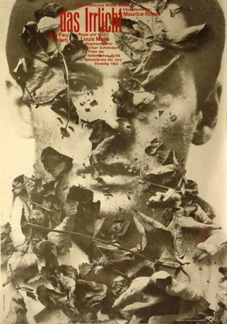

#6670 Das Irrlicht
Alternativ: The Fire Within (Englischer Titel)
 
 IMDB-Wertung: 8.1 / 10
IMDB-Wertung: 8.1 / 10  Metascore: 0
Metascore: 0 
Alain Leroy, ein Pariser Bohémien, scheint über alles zu verfügen, was ein angenehmes Leben ausmacht. Doch Alain hat mit seinem Leben abgeschlossen und sieht im Freitod seinen letzten Ausweg. „Das Irrlicht“ ist ein bewegender Film, dessen Stimmung mit der Musik Erik Saties untermalt wird. Auf der Biennale 1963 wurde er mit dem Spezialpreis der Jury und dem Preis der Filmkritik ausgezeichnet.
Jahr: 1963
Dauer: 79 Minuten
FSK: 16
Land: Frankreich Studio: Alive Vertrieb und MarketingTonspuren:
Untertitel:
Auflösung: 1080p (1792x1080) Größe: 5949 MB
Genre: Drama
Regisseur: Louis Malle
Drehbuch: Pierre Drieu La Rochelle
Soundtrack:
Darsteller:
 Maurice Ronet als Alain Leroy
Maurice Ronet als Alain Leroy- Léna Skerla als Lydia
 Hubert Deschamps als D'Averseau
Hubert Deschamps als D'Averseau- Bernard Noël als Dubourg
 Jeanne Moreau als Eva
Jeanne Moreau als Eva- Alexandra Stewart als Solange
- Yvonne Clech als Mademoiselle Farnoux
- Jean-Paul Moulinot als Dr. La Barbinais
- Mona Dol als Madame La Barbinais
- Pierre Moncorbier als Moraine
- René Dupuy als Charlie
- Bernard Tiphaine als Milou
- Ursula Kubler als Fanny
- Alain Mottet als Urcel
- François Gragnon als François Minville
- Romain Bouteille als Jérôme Minville
- Jacques Sereys als Cyrille Lavaud
- Claude Deschamps als Maria
- Tony Taffin als Brancion
- Henri Serre als Frédéric
- Madeleine Declercq als (uncredited
- Claude Deleusse als (uncredited
- Darling Légitimus als (uncredited
- Michèle Mahaut als (uncredited
Datei: X:\1963\Irrlicht, Das (1963, FSK16, 1792x1080).mkv seit 02.08.2017
Festplatte: HD 1900-1970
 Es gibt insgesamt 23 Filme in der Gruppe '1963'
Es gibt insgesamt 23 Filme in der Gruppe '1963'